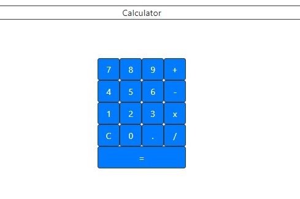

Calculator
Calculator is a simple calculator, created using React.

My new challenges in creating the Calculator were:
- Getting to grips with React; this was my first React project.
- The importance of testing! It wasn't until I showed an early version to a couple of friends that they spotted I'd missed out a 0 button.
-
Making it so that when the user clicks multiple number buttons, the calculator recognises them as a single number with multiple digits.
This required concatenating the numbers into a list, and then outputting the list as a float.
-